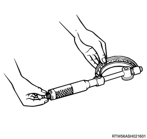

1. Measure the backlash using a dial gauge.
Note
Standard： 0.10 to 0.17 mm { 0.004 to 0.007 in }
Limit： 0.30 mm { 0.01 in }
2. Measure the clearance using a feeler gauge.
Note
Standard： 0.060 to 0.135 mm { 0.002 to 0.005 in }
Limit： 0.20 mm { 0.008 in }
1. Measure outer diameter using the micrometer.
Standard： 44.950 to 44.975 mm { 1.7697 to 1.7707 in } Idle gear A shaft
Limit： 44.80 mm { 1.764 in } Idle gear A shaft
Standard： 24.959 to 24.980 mm { 0.9826 to 0.9835 in } Idle gear C shaft
Limit： 24.80 mm { 0.976 in } Idle gear C shaft

2. Measure the idle gear using a cylinder gauge.
Note
3. Calculate the clearance from measured value.
Note
Standard： 0.025 to 0.075 mm { 0.0010 to 0.0030 in } Clearance between the idle gear A and shaft
Limit： 0.200 mm { 0.0079 in } Clearance between the idle gear A and shaft
Standard： 0.020 to 0.062 mm { 0.0008 to 0.0024 in } Clearance between the idle gear C and shaft
Limit： 0.200 mm { 0.0079 in } Clearance between the idle gear C and shaft